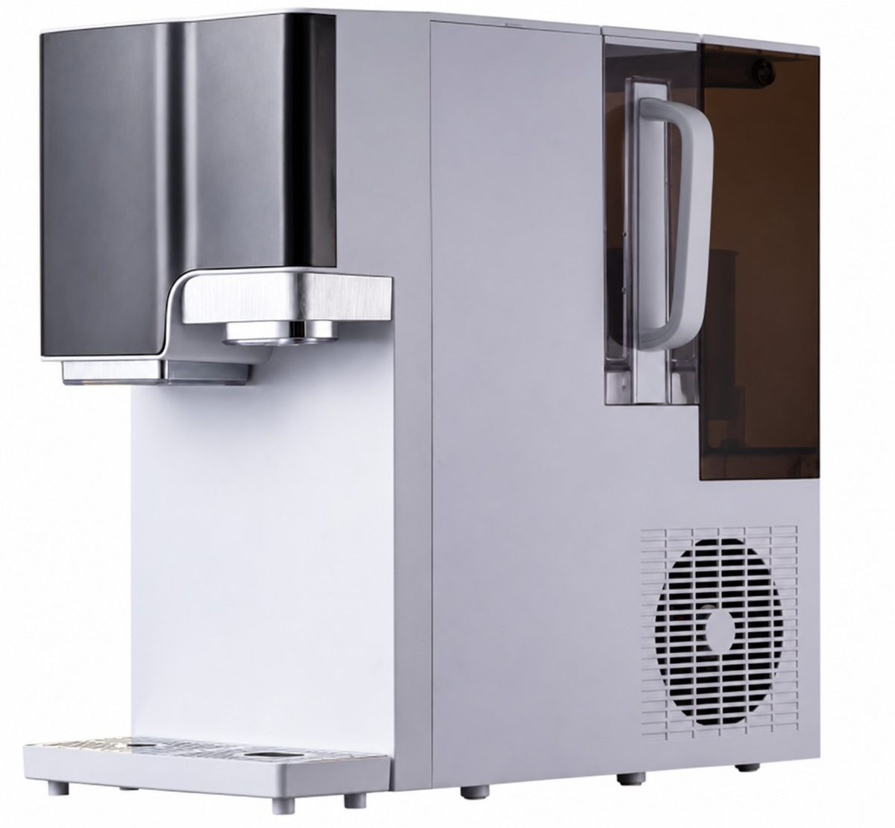
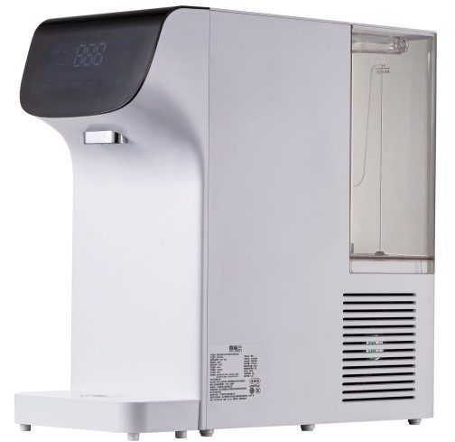
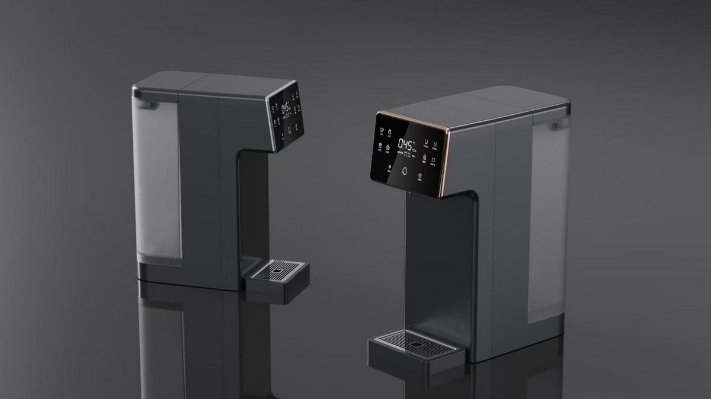
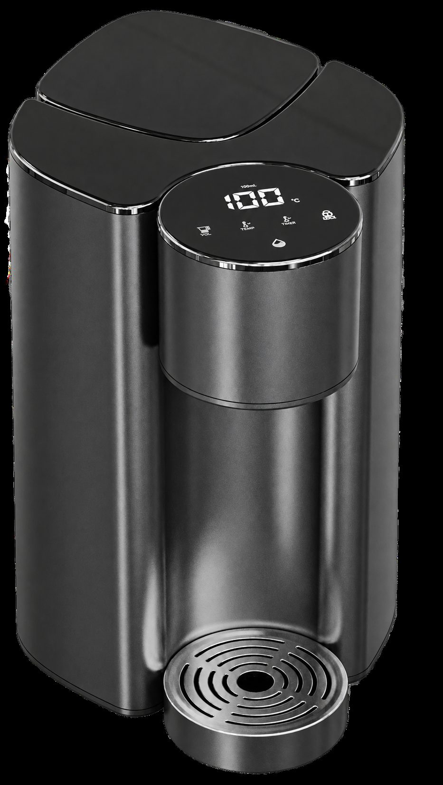
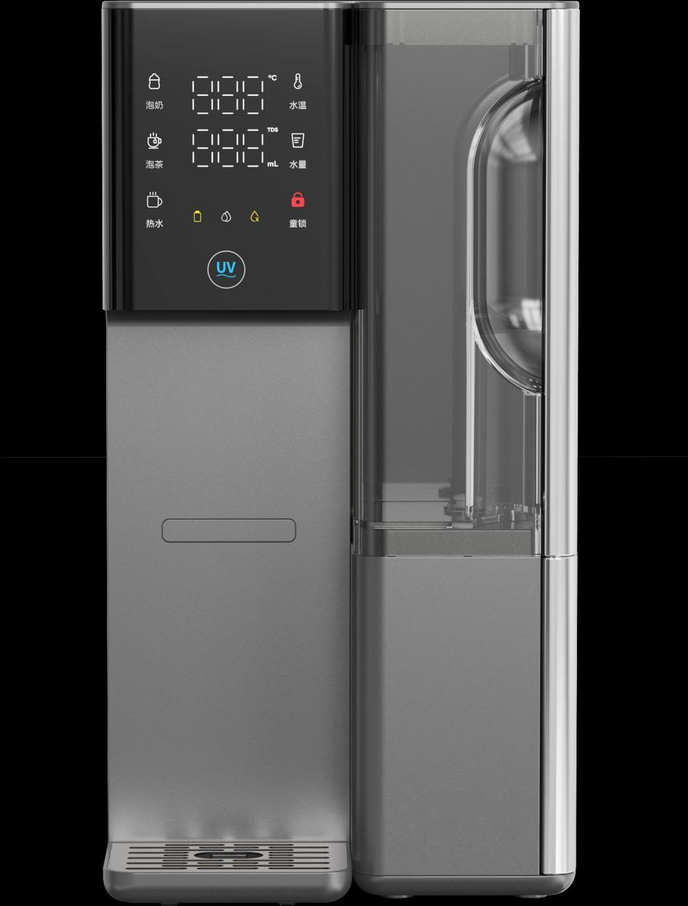

Countertop
CountertopWT-CT17
RO purifier with heating jug
Get a QuoteHome / Products / Countertop Systems
Countertop RO purifiers and dispensers — installation-free models that work as a new line for brands and distributors.
14 models. Specifications are confirmed per model and order.
CountertopRO purifier with heating jug
Get a Quote Countertop
CountertopAll-in-one cartridge countertop purifier
Get a Quote
CountertopRO purifier with ice, hot and cold water
Get a Quote
CountertopCountertop RO with compressor cooling
Get a Quote Countertop
CountertopRO purifier with freshly ground coffee
Get a Quote
CountertopCountertop water purifier
Get a Quote Countertop
CountertopInstant-heating RO dispenser
Get a Quote
CountertopInstallation-free instant-hot purifier
Get a Quote Countertop
CountertopInstant-heating RO with removable jug
Get a Quote
CountertopRO dispenser with electronic cooling
Get a Quote Countertop
CountertopCountertop hydrogen-water RO dispenser
Get a Quote Countertop
CountertopSparkling-water series, confirmed specifications
Get a Quote Countertop
CountertopNon-sparkling variant of WT-CT15 / WT-CT26 family
Get a Quote Countertop
CountertopSparkling-water series variant
Get a Quote